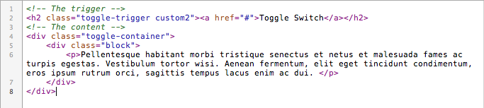
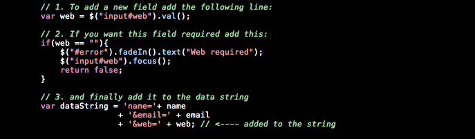

“SIMPLE” Documentation by “ansimuz v1.0
“SIMPLE TEMPLATE”
Created: 12/01/2011
By: Luis Zuno aka ansimuz
Email: luis@luiszuno.com
Thank you for purchasing my theme. If you have any questions that are beyond the scope of this help file, please feel free to email via my user page contact form here. Thanks so much!
Table of Contents
A) HTML - top
This theme is a fixed layout theme with XHTML validation. The main structure is as follow:
HTML STRUCTURE
- HEADER
- MAIN
- FOOTER
- BOTTOM

FILE LIST
The html folder contains all the necesary files to build a website it contains. Heres the list of files and folders:
- about-more.html
- about-styled.html
- about.html
- appearance.html
- blog.html
- contact.html
- css
- gallery-2.html
- gallery-3.html
- gallery.html
- img
- index.html
- js
- portfolio-single.html
- portfolio.html
- single.html
- images (the folder for the slides)
- piecemaker
- piecemakerCSS.css
- piecemakerXML.xml
- staff.html
STYLED TEXT
COLUMNS
Set the columns by placin the content for that column inside the divs as shown below and having the "last" class for the last div. The div clear shown in the image is optional if you dont desire columns overlaping.
TOOLTIPS
To have a tooltip in an image just add a class to the <IMG> tag and the desire display text in the "title" attribute.
Available classes:
- tool-left
- tool-right
- tool-top
- tool-bottom
<img src="img.jpg" alt="Dummy Image" class="tool-left" title="Hi" />
ACCORDION AND TOGGLE BOXES
This template includes a simple way to make toggle and accordion boxes using the magic of Jquery.
To make a text block toggle/accordion(able) you need the following coding structure:
TOGGLE BOX:
A trigger link
<h2 class="toggle-trigger custom"><a href="#">Toggle Switch</a></h2> and a div block nested inside a container block div.
<div class="toggle-container">
<div class="block">
<p>Content</p>
</div>
</div>

ACCORDION
A trigger link
<h2 class="accordion-trigger custom"><a href="#">Accordion Switch</a></h2> and a div block nested inside a container block div.
<div class="accordion-container">
<div class="block">
<p>Content</p>
</div>
</div>

TABS
Put inside the div with a class "tabbed" two elements one for the tab and one for the tab content:
For the tab add a li element inside the ul.
And for the content add a div beneath the ul with the id linked to the tab href.
In the image below you can see that the firs tab is linked to #tab1 so the content for that tab have an ID of "tab1"
SLIDES
You can have a mini slideshow by just adding images inside a div container with a class name of either
- slide-scroll
- slide-fade
GALLERY
The gallery.html file is designed to contain any number of thumbnails for image, video or flash files that also are filtarable. It uses prettyPhoto library for the image viewer.
There are trhee different layouts for the gallery:
- two-cols
- three-cols
- four-cols
You need to set this class next to the gallery class like this:
<ul id="portfolio-list" class="gallery three-cols" >
The major div blocks on this file are:
- Flter
- Thumbs
- Pager
FILTER
This is used to filter the thumbnails. The selector used is an <ul> tag with a id of portfolio-filter for each filter link you add a <li> element with a <a> element and a href anchor value.
For example to filter all the cat-images <li> elements from the portfolio-list <ul> the href of that link would be href="#cat-images"
Structure:

More info at the author of this js library here.
THUMBNAILS
The thumbnails are contained in a ul with an id named portfolio-list and for each thumbnail you need to create a li element. Use the class from the li to make it filterable (cat-images in this example).
example:

THE GALLERY PAGER
This ul is a list of links in the form of buttons. Its very simple. For each link just add a li element. You can set it active with the class active.
example:
BLOG
This file contains 2 major divs the one for the left content (the posts list) and the right content (the sidebar).
Major blocks:
- Posts
- Sidebar
POSTS
Inside the div" posts" you can add any number of post divs.
SIDEBAR
As for the sidebar you can set any number of blocks for navigation menus.
Use side-block <ul> element for normal navigation
or
side-posts for thumbnail navigation.
SINGLE
This file contains 2 major divs the one for the left content (the posts list) and the right content (the sidebar) same as the blog.html. The main difference is that this has 2 important blocks nested inside the post div.
Major blocks:
- posts
- post
- comments
- leave-comment
- sidebar
CONTACT
This file contains 2 major divs the one for the left content and the right content. The content may contain the form linked to a validion javascript (js/form-validation.js) , data, staff info and an image map.
Major blocks:
- one-half (LEFT SIDE)
- on-half last (RIGHT SIDE)
Conctact Form send mail data.
To set the sender and the recipients just change the value for the hidden input values inside the contact.html.

B) CSS Files and Structure - top
This theme uses several css files contained in the css folder the style.css
css file list:
- css/ie-hacks.css
- css/ie7-hacks.css (used to display on ie 7 correctly)
- css/ie8-hacks.css (used to display on ie 8 correctly)
- css/jquery.tabs-ie.css
- css/jquery.tabs.css
- css/reset.css
- css/social-icons.css
- css/style.css (This is the main file of styles)
- css/superfish-custom.css
- piecemakerCSS.css (used for the slideshow 3D piecemaker)
If you want to customze your css file i higly recommend to backup your css/styles.css file and anme it differently in case you make a y mistakes.
Use the social-icons to see the list of available icons in 16px and 32px sizes.
Use the superfish-custom.css to change the appearance of the drop down menus.
In the event of a visual issue in a internet explorer browser edit the css/ie7.css or the css.ie8.css file.
Important clasees for the main site are:
body { .. }
a{..}
h1..h6{...}
#header
#main,
#footer
#bottom{...}
.wrapper{}
and #logo{}
To edt the main configuration of the main site use the css/style.css the elements are grouped as follow marked by comment lines:
/* IMPORTS ------------------------------------------------------------*/ /* HACKS ------------------------------------------------------------*/ /* GENERAL ------------------------------------------------------------*/ /* COLUMNS LAYOUT----------------------------------------------------------*/ /* CONTENT ------------------------------------------------------------*/ /* LINK BUTTON ------------------------------------------------------------*/ /* STYLED ------------------------------------------------------------*/ /* TABLE ------------------------------------------------------------*/ /* INFO BOXES ------------------------------------------------------------*/ /* TOGGLE & ACCORDION ------------------------------------------------------------*/ /* TOOLTIP ----------------------------------------------------------- /* SEARCH ------------------------------------------------------------*/ /* NAVIGATION ------------------------------------------------------------*/ /* TITLE ------------------------------------------------------------*/ /* SLIDESHOW ------------------------------------------------------------*/ /* HOME PAGE ------------------------------------------------------------*/ /* NEWS LIST ------------------------------------------------------------*/ /* HOME BLOCKS ------------------------------------------------------------*/ /* TWITTER READER ------------------------------------------------------------*/ /* PORTFOLIO SIDEBAR ------------------------------------------------------------*/ /* PORTFOLIO CONTENT ------------------------------------------------------------*/ /* SINGLE PORTFOLIO MINI GALLERY-------------------------------------------------------*/ /* SINGLE PORTFOLIO CONTENT-------------------------------------------------------*/ /* PORTFOLIO RELATED PROJECTS --------------------------------------------------------- /* PAGER ------------------------------------------------------------*/ /* PORTFOLIO PAGER ------------------------------------------------------------*/ /* GALLERY ------------------------------------------------------------*/ /* PORTFOLIO FILTER ------------------------------------------------------------*/ /* GALLERY PAGER ------------------------------------------------------------*/ /* BLOG ------------------------------------------------------------*/ /* SIDEBAR ------------------------------------------------------------*/ /* RECENT-POSTS ------------------------------------------------------------*/ /* COMMENTS ------------------------------------------------------------*/ /* LEAVE COMMENT -------------------------------------------------------*/ /* FORMS ------------------------------------------------------------*/ /* STAFF ------------------------------------------------------------*/ /* FOOTER ------------------------------------------------------------*/ /* SOCIAL BAR ------------------------------------------------------------*/ /* FOOTER-COLS ------------------------------------------------------------*/ /* BOTTOM ------------------------------------------------------------*/
SOCIAL ICONS
Inside the css folder theres "social-icons.css" it list all the style for all the available icons.
C) Image Files - top
The sprites.png files are saved inside the img/sprites.png
The image files for this theme is as follow:
- bird.png
- bottom-texture.png
- Dummies (used for layout demonstration, you can erase this folder on final)
- girl.png
- guy.png
- knobs-icons
- komodo-icons
- logo.png
- over.png
- slideshow-bg.png
- slideshow-nav-bg.png
- sprites.png (this contains all graphic elements for foreground display)
- tooltip-bottom.png
- tooltip-left.png
- tooltip-right.png
- tooltip.png
The structure of the background files for this theme is as follow:
- bgs
- dots.png
- strips-bold.png
- strips-thin.png
- patterns
- pattern_098.gif
- pattern_134.gif
- pattern_145.gif
- pattern_146.gif
- pattern_156.gif
D) JavaScript - top
You can control almost all the config for the javaascript functionality inside the "js/custom.js" file.
JS FILES LIST
- jQuery is a Javascript library that greatly reduces the amount of code that you must write.
- Cufón aims to become a worthy alternative to sIFR, which despite its merits still remains painfully tricky to set up and use.
- PrettyPhoto is a jQuery based lightbox clone. Not only does it support images, it also add support for videos, flash, YouTube, iFrames. It’s a full blown media lightbox. The setup is easy and quick, plus the script is compatible in every major browser.
- DD_belatedPNG This is a Javascript library that sandwiches PNG image support into IE6 without much fuss.
- filterable.pack.js This plug in allows you to filter the thumbnails content
- jquery_cycle TThe jQuery Cycle Plugin is a slideshow plugin that supports many different types of transition effects. It supports pause-on-hover, auto-stop, auto-fit, before/after callbacks, click triggers and much more. It also supports, but does not require, the Metadata Plugin and the Easing Plugin.
- Jquery cycle all see above.
- jqueryui provides abstractions for low-level interaction and animation, advanced effects and high-level, themeable widgets, built on top of the jQuery JavaScript Library, that you can use to build highly interactive web applications.
- jQuery Easing Plugin A jQuery plugin from GSGD to give advanced easing options.
- Superfish Query plugin that takes an existing pure CSS drop-down menu.
- Twitter feedback to the top of your site
To change the twitter feed to your twitter account. Open custom.js and change the id value to your twitter user account.
SLIDESHOW
You can change the settings for the slideshow inside the custom.js file
FONT FILE
You can change the font file to an alternate font (bebas neue)
bebas-neue_400.font.js This is a free font you can download it here.
CUFON FONTS
You can change the cufon settings inside the custom.js file. You can add new font selectors adding them in the first parameter after a comma.
Example:
Cufon.replace(' .selector1, h2, .new-selector');
FORM VALIDATION
Form-validation.js and post-validation.js This is the javascript validation for the fields.
How to add fields to the contact form:

E) PSD Files - top
I've included 2 psd files in this theme all of them are editable:
- Sprites.psd
It contains all the graphic elements of the theme - Main.psd (the general layout)
- over.psd (For the thumbs roll overs)
- bird.psd
F) Sources and Credits - top
I've used the following images, icons or other files as listed.
JAVASCRIPT
- jQuery http://jquery.com/
- jqueryui . Jquery ui Home page.
- jQuery Easing Plugin http://gsgd.co.uk/sandbox/jquery/easing/
- jquery_cycle http://jquery.malsup.com/cycle/
- Jquery tabs http://stilbuero.de/tabs/
- filterable.pack.js http://www.gethifi.com/blog/a-jquery-plugin-to-create-an-interactive-filterable-portfolio-like-ours
- PrettyPhoto http://www.no-margin-for-errors.com/projects/prettyphoto-jquery-lightbox-clone/
- Twitter feedback http://remysharp.com
- Jquery tools http://flowplayer.org/tools/
- Cufón http://cufon.shoqolate.com/generate/
- DD_belatedPNG http://www.dillerdesign.com/experiment/DD_belatedPNG/
- Bebas font http://www.fontsquirrel.com/fonts/bebas
- Superfish http://users.tpg.com.au/j_birch/plugins/superfish/
- 3D slideshow Piecemaker http://www.modularweb.net/#/en/piecemaker
IMAGES
- Image assets used http://themeforest.net/page/asset_library
- Social icons by Komodo media http://www.komodomedia.com/download/
- Knobs icons http://itweek.deviantart.com/art/Knob-Buttons-Toolbar-icons-73463960
- Background images http://www.squidfingers.com/patterns/
Once again, thank you so much for purchasing this theme. As I said at the beginning, I'd be glad to help you if you have any questions relating to this theme. No guarantees, but I'll do my best to assist. If you have a more general question relating to the themes on ThemeForest, you might consider visiting the forums and asking your question in the "Item Discussion" section.
ansimuz